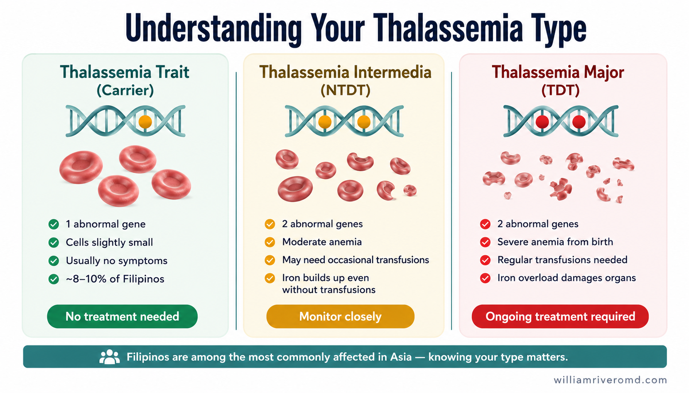
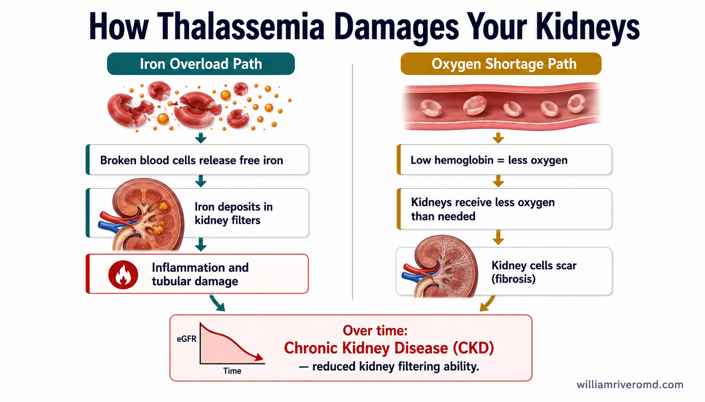
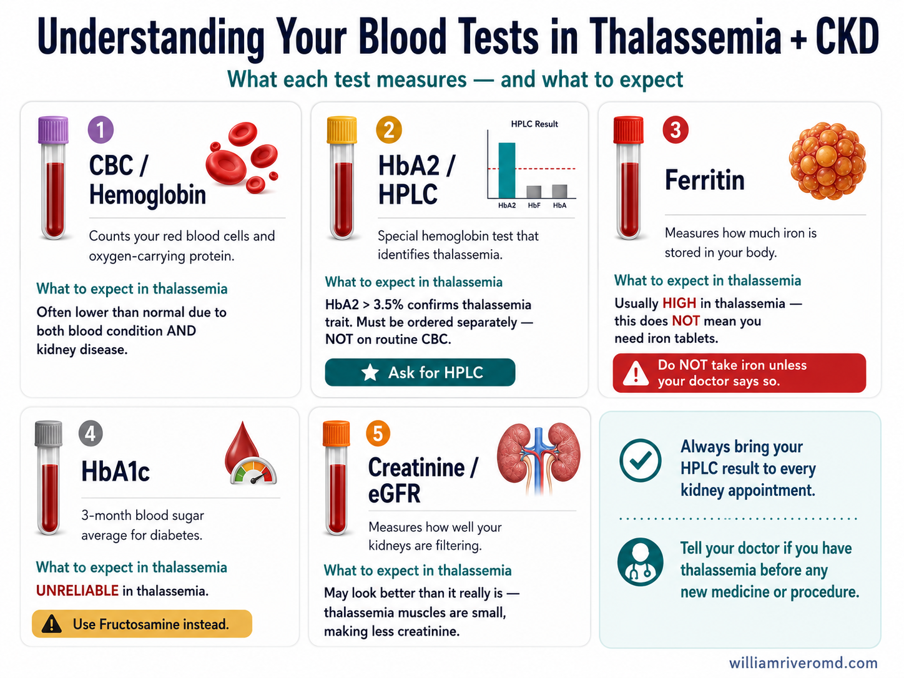
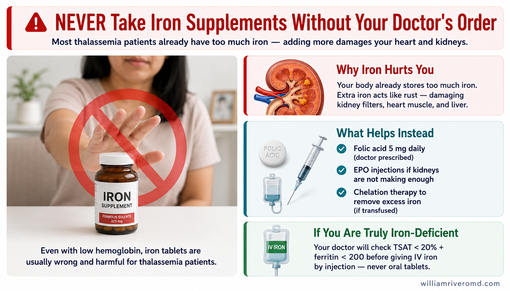
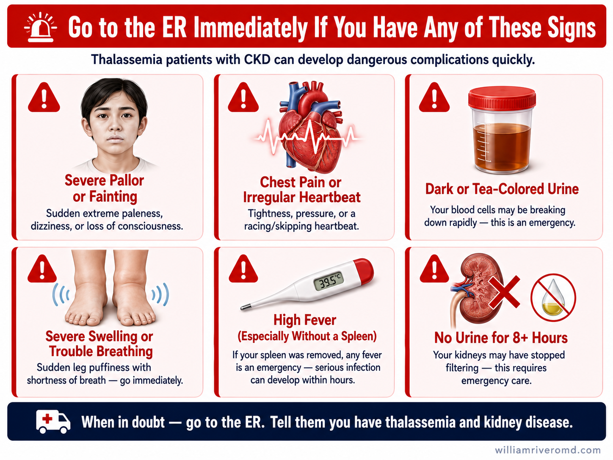
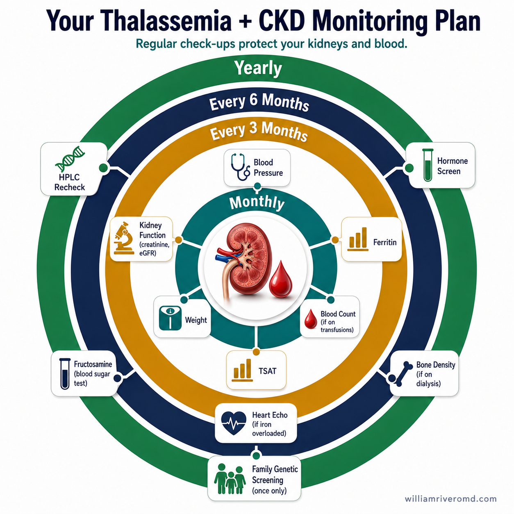

🧬 What is Thalassemia? 🧬 Ano ang Talasemya? 🧬 Unsa ang Talasemya? 🧬 Nano ing Talasemya?
Thalassemia is a blood condition you were born with — it is not an infection, not caused by diet, and cannot be passed from one person to another. Your body makes red blood cells that are smaller and break down faster than normal. This is because of a difference in a gene you inherited from one or both of your parents. Ang talasemya ay isang kondisyon sa dugo na ipinanganak ka na mayroong — hindi ito impeksyon, hindi sanhi ng pagkain, at hindi maipapasa sa iba. Ang iyong katawan ay gumagawa ng mga pulang selula ng dugo na mas maliit at mas mabilis na nasisira kaysa normal. Ito ay dahil sa pagkakaiba sa gene na minana mo mula sa isa o sa dalawa mong magulang. Ang talasemya usa ka kondisyon sa dugo nga natawo ka na adunay niini — dili kini impeksyon, dili sanhi sa pagkaon, ug dili mapalabay sa lain. Ang imong lawas nagbuhat og mga pula nga selula sa dugo nga mas gamay ug mas paspas nagbuak kaysa normal. Kini tungod sa pagkalainlain sa gene nga imong gipanulundon gikan sa usa o duha sa imong ginikanan. Ing talasemya metung a kondisyon king dugo a ipinanganak ka na a maki niyan — ali ya impeksyon, ali sanhi ning pagkain, at ali maipasa king dili. Ing katawan mu gumagawa ning mararuang selula ning dugo a mas malati at mas malilis a nasisira kaysa normal. Iti tungkul king pagkakaiba king gene a minana mu mula king metung o kilua a magulang mu.
Thalassemia is especially common in the Philippines and Southeast Asia — about 8–10 out of every 100 Filipinos carry the thalassemia gene without knowing it. Being a carrier (called "trait") is very different from having the disease. Ang talasemya ay lalong karaniwan sa Pilipinas at Timog-silangang Asya — mga 8–10 sa bawat 100 Pilipino ang nagdadala ng gene ng talasemya nang hindi nila alam. Ang pagiging tagadala (tinatawag na "trait") ay napaka-iba sa pagkakaroon ng sakit. Ang talasemya labi nga komon sa Pilipinas ug Timog-silangan nga Asya — mga 8–10 sa matag 100 Pilipino nagdala sa gene sa talasemya nga walay nahibaloi. Ang pagiging carrier (gitawag nga "trait") lahi kaayo sa pagbaton sa sakit. Ing talasemya kilala at kapareho king Pilipinas at Timog-silangang Asya — mga 8–10 king balang 100 Pilipino ing nagdadala ning gene ning talasemya awang nung mibalu. Ing pagiging carrier (tinatawag "trait") malayo ya king pagkakaroon ning sakit.
Thalassemia Trait (Carrier) Talasemya Trait (Tagadala) Talasemya Trait (Carrier) Talasemya Trait (Carrier)
You have one abnormal gene. Your blood cells are slightly small but you usually feel well. No treatment needed. Can pass gene to children. Mayroon kang isang abnormal na gene. Ang iyong mga selula ng dugo ay bahagyang maliit ngunit karaniwan ay masaya ka. Hindi kailangan ng paggamot. Maaaring maipasa ang gene sa mga anak. Ikaw adunay usa ka abnormal nga gene. Ang imong mga selula sa dugo gamay og gamay apan kasagaran maayo ka. Wala kinahanglang pagtambal. Pwedeng malabay ang gene sa mga anak. Ika maki metung a abnormal na gene. Ing mga selula ning dugo mu medyo malati ngeni karaniwan maayos ka. Ali kailangang gamot. Pwedeng maipasa ing gene king mga anak.
Thalassemia Intermedia Talasemya Intermedia Talasemya Intermedia Talasemya Intermedia
Two abnormal genes but moderate anemia. May need occasional transfusions. Liver and spleen may enlarge. Iron buildup can occur even without transfusions. Dalawang abnormal na gene ngunit katamtamang anemya. Maaaring kailangan ng paminsan-minsang transfusion. Maaaring lumaki ang atay at pali. Maaaring mag-ipon ng iron kahit walang transfusion. Duha ka abnormal nga gene apan katungang anemya. Mahimong kinahanglan og panagsa-sagsa nga transfusion. Ang atay ug pali mahimong modako. Ang iron mahimong mag-ipon bisan walay transfusion. Kilua abnormal na gene ngeni katamtamang anemya. Maging kailangan ng minsan-minsang transfusion. Maging lumaki ing atay at pali. Maging mag-iipon ning iron kahit ala transfusion.
Thalassemia Major Talasemya Major Talasemya Major Talasemya Major
Severe anemia from birth. Needs regular blood transfusions every 3–4 weeks for life. Iron overload from transfusions damages the heart, liver, and kidneys. Requires chelation therapy. Matinding anemya mula sa kapanganakan. Kailangan ng regular na transfusion ng dugo bawat 3–4 linggo habang buhay. Ang labis na iron mula sa mga transfusion ay nagpapasama sa puso, atay, at bato. Nangangailangan ng chelation therapy. Grabe nga anemya sukad sa pagkatawo. Nagkinahanglan og regular nga transfusion sa dugo matag 3–4 ka semana sa tibuok kinabuhi. Ang sobra nga iron gikan sa mga transfusion nakapangdaot sa kasingkasing, atay, ug kidney. Nagkinahanglan og chelation therapy. Malang anemya mula king kapanganakan. Kailangan ning regular na transfusion ning dugo balang 3–4 linggu habang biyay. Ing labis na iron mula king mga transfusion makapipinsala king puso, atay, at batu. Kailangan ning chelation therapy.

Thalassemia type comparison: trait (1 abnormal gene, usually no symptoms), intermedia (moderate anemia), and major (severe, requires regular transfusions and chelation).
- NTDT
- Non-Transfusion-Dependent Thalassemia
- TDT
- Transfusion-Dependent Thalassemia
Trait ≠ Disease Trait ≠ Sakit Trait ≠ Sakit Trait ≠ Sakit
Most Filipinos with thalassemia have only the trait and live perfectly normal, healthy lives. Having the trait does not mean you are sick — but it is important information for family planning and before any surgery or kidney treatment. Karamihan sa mga Pilipinong may talasemya ay mayroon lamang ng trait at namumuhay ng perpektong normal at malusog na buhay. Ang pagkakaroon ng trait ay hindi nangangahulugang may sakit ka — ngunit ito ay mahalagang impormasyon para sa pagpaplano ng pamilya at bago ang anumang operasyon o paggamot sa bato. Kadaghanan sa mga Pilipino nga adunay talasemya adunay lamang trait ug nabuhi og hingpit nga normal ug himsog nga kinabuhi. Ang pagbaton sa trait dili magpasabot nga masakiton ka — apan kini importante nga impormasyon alang sa pagplano sa pamilya ug sa wala pa ang bisan unsang operasyon o pagtambal sa kidney. Kalumwa sa mga Pilipinong maki talasemya maki la trait at mabiyay king perpektong normal at masustansyang biyay. Ing pagkakaroon ning trait ali makahulugan a masakit ka — ngeni mahalaga yang impormasyon para king pagpaplano ning pamilya at bago ing anung operasyon o paggamot king batu.
🫘 How Thalassemia Affects Your Kidneys 🫘 Paano Nakakaapekto ang Talasemya sa Iyong Bato 🫘 Giunsa Nakaapekto ang Talasemya sa Imong Kidney 🫘 Panung Nakakaapektu ing Talasemya king Batu Mu
Your kidneys filter your blood all day, every day. When thalassemia causes your red blood cells to break down too quickly, the released iron acts like rust — damaging the delicate kidney filters over time. Chronic low blood counts also mean your kidneys receive less oxygen, leading to scarring (fibrosis). Ang iyong mga bato ay nag-filter ng iyong dugo araw-araw. Kapag ang talasemya ay nagdudulot ng mabilis na pagkasira ng iyong mga pulang selula ng dugo, ang nailabas na iron ay kumikilos tulad ng kalawang — unti-unting nasisirang mga pinong filter ng bato. Ang patuloy na mababang bilang ng dugo ay nangangahulugan din na ang iyong mga bato ay tumatanggap ng mas kaunting oxygen, na nagdudulot ng pag-ukit (fibrosis). Ang imong mga kidney nag-filter sa imong dugo matag adlaw. Kung ang talasemya naghimo sa imong mga pula nga selula sa dugo nga magbuak paspas, ang gipagawas nga iron molihok sama sa kalawang — sa paglabay sa panahon nakapangdaot sa delikado nga mga filter sa kidney. Ang padayon nga ubos nga ihap sa dugo nagpasabot usab nga ang imong mga kidney makadawat og kulang nga oxygen, nga mosangpot sa pag-ukit (fibrosis). Ing batu mu nagsasala ning dugo mu adlaw-adlaw. Kapag ing talasemya magsanghiran ning mabilis na pagkasira ning mga mararuang selula ning dugo, ing nailabas na iron kumikilos tulad ning kalawang — unti-unting nasisira ing mga pinong filter ning batu. Ing patuloy na mababang bilang ning dugo nangangahulugan din a ing batu mu tatanggap ning kulang na oxygen, pababa sa pag-ukit (fibrosis).
Iron Overload Path Landas ng Labis na Iron Dalan sa Sobrang Iron Dalan ning Labis na Iron
Broken blood cells release free iron → deposits in kidney tubules → inflammation → kidney damage. Transfusions add more iron. Body absorbs even more from food when anemia is severe. Ang nasira na mga selula ng dugo ay naglalabas ng libreng iron → nag-iimbak sa mga tubule ng bato → pamamaga → pinsala sa bato. Ang mga transfusion ay nagdaragdag ng mas maraming iron. Ang katawan ay sumasipsip ng mas marami pa mula sa pagkain kapag malubha ang anemya. Ang nabuak nga mga selula sa dugo nagluwas sa libre nga iron → nagtipig sa mga tubule sa kidney → inflamasyon → kadaot sa kidney. Ang mga transfusion nagdugang og dugang nga iron. Ang lawas mosipsip og labi pa gikan sa pagkaon kung grabe ang anemya. Ing nasira na mga selula ning dugo naglalabas ning libre na iron → nag-iimbak king mga tubule ning batu → pamamaga → pinsala king batu. Ing mga transfusion nagdadagdag ning mas dakal na iron. Ing katawan sumasipsip ning mas dakal pa mula king pagkain kapag malang ing anemya.
Oxygen Shortage Path Landas ng Kakulangan ng Oxygen Dalan sa Kakulang sa Oxygen Dalan ning Kakulangan ning Oxygen
Chronic anemia → kidneys get less oxygen → kidney cells scar → kidney function declines (CKD). Low hemoglobin also means your body demands more EPO (kidney hormone), overworking the kidneys. Talamak na anemya → mas kaunting oxygen ang nakukuha ng mga bato → nagpapiltik ng mga selula ng bato → bumababa ang function ng bato (CKD). Ang mababang hemoglobin ay nangangahulugan din na ang iyong katawan ay nangangailangan ng mas maraming EPO (hormone ng bato), na nagpapagod sa mga bato. Talamak nga anemya → ang mga kidney makakuha og kulang nga oxygen → ang mga selula sa kidney mag-ukit → ang paggana sa kidney molugsong (CKD). Ang ubos nga hemoglobin nagpasabot usab nga ang imong lawas nagkinahanglan og dugang nga EPO (hormone sa kidney), nakapapagol sa mga kidney. Talamak na anemya → ing batu makakuha ning kulang na oxygen → ing mga selula ning batu nag-ukit → baba ing function ning batu (CKD). Ing mababang hemoglobin nangangahulugan din a ing katawan mu kailangan ning dakal pang EPO (hormone ning batu), napapagod ing mga batu.

Two separate pathways — iron overload (rust-like tubular deposits) and chronic low oxygen (renal hypoxia and fibrosis) — both lead to worsening CKD over time.
- CKD
- Chronic Kidney Disease
- eGFR
- Estimated Glomerular Filtration Rate
- NTBI
- Non-Transferrin-Bound Iron
Always tell your kidney doctor you have thalassemia Laging sabihin sa iyong doktor sa bato na mayroon kang talasemya Kanunay sultihi ang imong doktor sa kidney nga ikaw adunay talasemya Lagi sabiyan ing doktor mu king batu a maki ka talasemya
Thalassemia changes how kidney blood tests should be read, which medicines are safe, and how much iron you should receive. Without this information, your doctor may give you the wrong treatment. Ang talasemya ay nagbabago kung paano dapat basahin ang mga blood test sa bato, kung aling mga gamot ang ligtas, at kung magkano ang iron na dapat mong matanggap. Kung wala ang impormasyong ito, maaaring bigyan ka ng iyong doktor ng maling paggamot. Ang talasemya nagbag-o kung giunsa ang mga blood test sa kidney kinahanglan basahon, kung unsang mga medisina ang luwas, ug kung pila ang iron nga kinahanglan nimo makuha. Kung wala kining impormasyon, ang imong doktor mahimong mohatag nimo og sayop nga pagtambal. Ing talasemya nagbabago kung paung dapat basahin ing mga blood test king batu, kung aning mga gamot ing ligtas, at kung magkanu ing iron a dapat mong matanggap. Awang nitong impormasyon, ing doktor mu maging magbigay king mali na paggamot.
🔬 Tests and What They Mean 🔬 Mga Pagsusuri at Ang Kahulugan Nito 🔬 Mga Pagsusi ug Unsa Kini nga Nagpasabot 🔬 Mga Pagsuri at Ing Kahulugan Niti
| TestPagsusuriPagsusiPagsuri | What it checksAno ang sinusuriUnsa ang gisusiNano ing sinusuri | In thalassemia + CKDSa talasemya + CKDSa talasemya + CKDKing talasemya + CKD |
|---|---|---|
| CBC / Hemoglobin | Red blood cell count & oxygen-carrying proteinBilang ng pulang selula at protina na nagdadala ng oxygenIhap sa pula nga selula ug protina nga nagdala sa oxygenBilang ning mararuang selula at protina a nagdadala ning oxygen | Often low due to both thalassemia AND CKD — hard to separateMadalas mababa dahil sa talasemya AT CKD — mahirap paghiwalayinKasagaran ubos tungod sa talasemya UG CKD — lisod ibulagMadalas baba tungkul king talasemya AT CKD — mahirap paghiwalayin |
| HbA2 / HPLC | Special hemoglobin test that identifies thalassemia typeEspesyal na pagsusuri ng hemoglobin na nagtatukoy ng uri ng talasemyaEspesyal nga pagsusi sa hemoglobin nga nagtino sa klase sa talasemyaEspesyal na pagsuri ning hemoglobin a nagtutukoy ning klase ning talasemya | HbA2 >3.5% confirms β-thalassemia trait; not on routine CBCHbA2 >3.5% nagpapatunay ng β-talasemya trait; wala sa routine CBCHbA2 >3.5% nagkumpirmar sa β-talasemya trait; wala sa routine CBCHbA2 >3.5% nagpapatunay ning β-talasemya trait; ali king routine CBC |
| Ferritin | Protein that stores iron — reflects iron level in the bodyProtina na nag-iimbak ng iron — sumasalamin sa antas ng iron sa katawanProtina nga nagtipig sa iron — nagsalamin sa lebel sa iron sa lawasProtina a nag-iimbak ning iron — sumasalamin king antas ning iron king katawan | Often high in thalassemia — NOT the same as iron deficiency. Do NOT give iron if ferritin is high.Madalas mataas sa talasemya — HINDI katulad ng kakulangan ng iron. HUWAG bigyan ng iron kung mataas ang ferritin.Kasagaran taas sa talasemya — DILI sama sa kakulang sa iron. AYAW ibhatag og iron kung taas ang ferritin.Madalas mataas king talasemya — HINDI kapareho ning kakulangan ning iron. HUWAG bigyan ning iron kung mataas ing ferritin. |
| HbA1c | 3-month blood sugar average — used for diabetes monitoring3-buwang average ng asukal sa dugo — ginagamit para sa pagsubaybay ng diabetes3-buwang average sa asukar sa dugo — gigamit alang sa pag-monitor sa diabetes3-buwang average ning asukal king dugo — ginagamit para king pag-monitor ning diabetes | Unreliable — falsely low in thalassemia. Use fructosamine instead. — mababang maling resulta sa talasemya. Gamitin ang fructosamine sa halip. — sayop nga ubos sa talasemya. Gamiton ang fructosamine imbes. — mababang mali king talasemya. Gamitin ing fructosamine imbes. |
| Creatinine / eGFR | Measures kidney filtering abilitySinusukat ang kakayahan ng bato sa pag-filterNagsukod sa abilidad sa pag-filter sa kidneySinusukat ing kakayahan ning batu sa pag-filter | May underestimate kidney damage in thalassemia — small muscles make less creatinineMaaaring maliitin ang pinsala ng bato sa talasemya — ang maliit na kalamnan ay gumagawa ng mas kaunting creatinineMahimong maaliwan ang kadaot sa kidney sa talasemya — ang gagmay nga kaunoran nagbuhat og gamay nga creatinineMaging maliitan ing pinsala ning batu king talasemya — mababang kalamnan gumagawa ning kulang na creatinine |
| Urine protein | Protein leaking into urine — early sign of kidney damageProtina na tumatagos sa ihi — maagang tanda ng pinsala ng batoProtina nga nagtulo sa ihi — sayo nga timailhan sa kadaot sa kidneyProtina a tumatagos king ihi — maaga tanda ning pinsala ning batu | Important early marker; check at every kidney visitMahalagang maagang marker; suriin sa bawat pagbisita sa batoImportante nga sayo nga marker; susiha sa matag bisita sa kidneyMahalaga maagang marker; suriin king balang bisita king batu |

Quick reference: six key tests your kidney doctor uses in thalassemia, what each measures, and what results typically look like — including the HbA1c pitfall.
- HPLC
- High-Performance Liquid Chromatography — required to measure HbA2
- HbA2
- Hemoglobin A2 — elevated (>3.5%) in β-thalassemia trait
- TSAT
- Transferrin Saturation — iron transport marker
- eGFR
- Estimated Glomerular Filtration Rate — kidney filtering ability
💊 Treatment and Lifestyle 💊 Paggamot at Pamumuhay 💊 Pagtambal ug Estilo sa Kinabuhi 💊 Pagamot at Pamumuhay
NEVER take iron supplements without your doctor's order HUWAG KAILANMAN uminom ng mga iron supplement nang walang utos ng iyong doktor AYAW GAYUD magkuha og mga iron supplement nga wala ang mando sa imong doktor HUWAG KAILANMAN uminum ning mga iron supplement awang utos ning doktor mu
Most people with thalassemia already have too much iron in their body. Taking extra iron can cause serious damage to your heart, liver, and kidneys. Even if your hemoglobin is low, iron tablets are usually wrong and harmful for thalassemia patients. Karamihan sa mga taong may talasemya ay mayroon na ng sobrang iron sa kanilang katawan. Ang pag-inom ng karagdagang iron ay maaaring magdulot ng malubhang pinsala sa iyong puso, atay, at bato. Kahit mababa ang iyong hemoglobin, ang mga iron tablet ay karaniwang mali at mapanganib para sa mga pasyenteng may talasemya. Kadaghanan sa mga tawo nga adunay talasemya aduna na og sobra nga iron sa ilang lawas. Ang pagkuha og dugang nga iron mahimong moingon og grabe nga kadaot sa imong kasingkasing, atay, ug kidney. Bisan ubos ang imong hemoglobin, ang mga iron tablet kasagaran sayop ug makadaot alang sa mga pasyente nga adunay talasemya. Kalumwa sa mga tawung maki talasemya maki na ning sobrang iron king katawan da. Ing pag-inom ning dagdag na iron maging magsanghiran ning malang pinsala king puso, atay, at batu mu. Kahit mababa ing hemoglobin mu, ing mga iron tablet karaniwan ay mali at makapipinsala para king mga pasyenteng maki talasemya.

Iron tablets are dangerous in most thalassemia patients. Safer alternatives include folic acid, EPO injections for CKD-related anemia, and chelation therapy to remove excess iron.
- EPO
- Erythropoietin — kidney hormone that stimulates red blood cell production
- TSAT
- Transferrin Saturation — must be <20% before any IV iron is given
Treatment by type Paggamot ayon sa uri Pagtambal sumala sa klase Pagamot ayon king klase
If you have the trait onlyKung mayroon ka lamang ng traitKung adunay ka lamang sa traitKung maki ka la trait
Usually no treatment is needed. Take folic acid if your doctor prescribes it. Focus on controlling kidney disease: low-salt diet, blood pressure medications, avoid NSAIDs (mefenamic acid, ibuprofen).Karaniwan ay hindi kailangan ng paggamot. Uminom ng folic acid kung iniresetang ng iyong doktor. Tumuon sa pagkontrol ng sakit sa bato: mababang-asin na diyeta, gamot sa presyon ng dugo, iwasan ang NSAIDs (mefenamic acid, ibuprofen).Kasagaran walay pagtambal nga gikinahanglan. Kumuha og folic acid kung ipreskriba sa imong doktor. Fokus sa pagkontrol sa sakit sa kidney: ubos-asin nga pagkaon, mga gamot sa presyon sa dugo, likayi ang NSAIDs (mefenamic acid, ibuprofen).Karaniwan ali kailangan paggamot. Uminom ning folic acid kung iniresetang ning doktor mu. Tumuon king pagkontrol ning sakit king batu: mababang-asin na pagkain, gamot king presyon ning dugo, iwasan ing NSAIDs (mefenamic acid, ibuprofen).
If you need blood transfusionsKung kailangan ng transfusion ng dugoKung kinahanglan og transfusion sa dugoKung kailangan ning transfusion ning dugo
Regular transfusions keep hemoglobin at a safe level but add iron to the body. Your doctor will monitor your ferritin and may prescribe iron-removing medicine (chelation therapy) to protect your heart and kidneys.Ang regular na mga transfusion ay nagpapanatili ng hemoglobin sa ligtas na antas ngunit nagdaragdag ng iron sa katawan. Susubaybayan ng iyong doktor ang iyong ferritin at maaaring mag-reseta ng gamot na nag-aalis ng iron (chelation therapy) para protektahan ang iyong puso at bato.Ang regular nga mga transfusion nagpadayon sa hemoglobin sa luwas nga lebel apan nagdugang og iron sa lawas. Ang imong doktor magmonitor sa imong ferritin ug mahimong magreseta og gamot nga nagtangtang sa iron (chelation therapy) aron protektahan ang imong kasingkasing ug kidney.Ing regular na mga transfusion nagpapanatili ning hemoglobin king ligtas na antas ngeni nagdadagdag ning iron king katawan. Magmonitor ing doktor mu king ferritin mu at maging magreseta ning gamot a nag-aalis ning iron (chelation therapy) para protektahan ing puso at batu mu.
ESA injections for kidney anemiaMga iniksyon ng ESA para sa anemya ng batoMga inyeksyon sa ESA alang sa anemya sa kidneyMga inyeksyon ning ESA para king anemya ning batu
If your kidneys no longer make enough EPO hormone, your doctor may prescribe EPO injections (erythropoietin / darbepoetin). These help make more red blood cells. The target hemoglobin is kept at 100–115 g/L — not too low, not too high.Kung ang iyong mga bato ay hindi na gumagawa ng sapat na hormone na EPO, maaaring mag-reseta ang iyong doktor ng mga iniksyon ng EPO (erythropoietin / darbepoetin). Nakakatulong ito sa paggawa ng mas maraming pulang selula ng dugo. Ang target na hemoglobin ay pinananatili sa 100–115 g/L — hindi masyadong mababa, hindi masyadong mataas.Kung ang imong mga kidney dili na makahimo og igo nga hormone nga EPO, ang imong doktor mahimong magreseta og mga inyeksyon sa EPO (erythropoietin / darbepoetin). Kini makatabang sa paghimo og dugang nga pula nga selula sa dugo. Ang target nga hemoglobin gipadayon sa 100–115 g/L — dili kaayo ubos, dili kaayo taas.Kung ing batu mu ali na gumagawa ning sapat na hormone na EPO, maging magreseta ing doktor mu ning mga inyeksyon ning EPO (erythropoietin / darbepoetin). Kini nakakatulong king paggawa ning dakal pang mararuang selula ning dugo. Ing target na hemoglobin pinananatili king 100–115 g/L — ali masyadong baba, ali masyadong mataas.
✅ Lifestyle tips for thalassemia + CKD ✅ Mga tip sa pamumuhay para sa talasemya + CKD ✅ Mga tip sa estilo sa kinabuhi alang sa talasemya + CKD ✅ Mga tip king pamumuhay para king talasemya + CKD
- Limit high-iron foods (liver, blood foods, iron-fortified cereals) if your ferritin is already highLimitahan ang mga pagkaing may mataas na iron (atay, pagkaing may dugo, mga cereal na may iron) kung mataas na ang iyong ferritinLimitahan ang mga pagkaon nga taas og iron (atay, pagkaon nga may dugo, mga cereal nga may iron) kung taas na ang imong ferritinLimitahan ing mga pagkaing mataas na iron (atay, mga pagkain a maki dugo, mga cereal a maki iron) kung mataas na ing ferritin mu
- Eat enough protein (especially if on dialysis: 1.2 g/kg/day)Kumain ng sapat na protina (lalo na kung nasa dialysis: 1.2 g/kg/araw)Kan-on og igo nga protina (labi na kung naa sa dialysis: 1.2 g/kg/adlaw)Kumain ning sapat na protina (lalo na kung king dialysis: 1.2 g/kg/adlaw)
- Take folic acid 5 mg daily if prescribed (helps replace broken blood cells)Uminom ng folic acid 5 mg araw-araw kung inireseta (tumutulong sa pagpapalit ng nasira na mga selula ng dugo)Kumuha og folic acid 5 mg matag adlaw kung ipreskriba (makatabang sa pagpuli sa mga nabuak nga selula sa dugo)Uminom ning folic acid 5 mg adlaw-adlaw kung iniresetang (tumutulong king pagpapalit ning nasira na mga selula ning dugo)
- Control blood pressure — target <130/80 mmHg in CKDKontrolin ang presyon ng dugo — target na <130/80 mmHg sa CKDKontrola ang presyon sa dugo — target nga <130/80 mmHg sa CKDKontrolin ing presyon ning dugo — target na <130/80 mmHg king CKD
- Keep all follow-up appointments — early detection of changes saves kidneysSundin ang lahat ng follow-up na appointment — ang maagang pagtuklas ng mga pagbabago ay nagliligtas ng mga batoTuman ang tanan nga follow-up nga appointment — ang sayo nga pagtuklas sa mga pagbabago nagluwas sa mga kidneySundan ing lahat ning follow-up na appointment — ing maagang pagtukoy ning mga pagbabago nagliligtas ning mga batu
🚨 Warning Signs — Go to the ER 🚨 Mga Babala — Pumunta sa ER 🚨 Mga Pahimangno — Adto sa ER 🚨 Mga Babala — Punta king ER
🔴 Seek emergency care immediately if you have: 🔴 Humingi ng agarang pangangalaga kung mayroon kang: 🔴 Mangita og emergency nga tabang dayon kung ikaw adunay: 🔴 Humanap agad ning emergency na pag-aaruga kung maki ka:

Six emergency warning signs in thalassemia + CKD that require immediate ER care. Always tell the emergency team you have thalassemia and kidney disease.
Medicines that can trigger a crisis Mga gamot na maaaring mag-trigger ng krisis Mga gamot nga mahimong mag-trigger og krisis Mga gamot a maging mag-trigger ning krisis
Always inform all doctors and dentists that you have thalassemia before taking: dapsone, primaquine, sulfonamides, or X-ray dye (contrast). These can trigger sudden red blood cell destruction. Also avoid: mefenamic acid, ibuprofen, and other NSAIDs. Laging ipaalam sa lahat ng doktor at dentista na mayroon kang talasemya bago uminom ng: dapsone, primaquine, sulfonamides, o pangkulay sa X-ray (contrast). Maaari itong mag-trigger ng biglang pagkasira ng mga pulang selula ng dugo. Iwasan din: mefenamic acid, ibuprofen, at iba pang NSAIDs. Kanunay ipasulti sa tanang mga doktor ug dentista nga adunay ka talasemya sa wala pa magkuha og: dapsone, primaquine, sulfonamides, o pangkulay sa X-ray (contrast). Kini mahimong mag-trigger sa kalit nga pagkaguba sa mga pula nga selula sa dugo. Likayi usab: mefenamic acid, ibuprofen, ug uban pang NSAIDs. Lagi ipaalam king lahat ning mga doktor at dentista a maki ka talasemya bago uminom ning: dapsone, primaquine, sulfonamides, o pangkulay king X-ray (contrast). Kini maging mag-trigger ning biglaang pagkasira ning mga mararuang selula ning dugo. Iwasan din: mefenamic acid, ibuprofen, at dili pang NSAIDs.
📅 Follow-Up and Next Steps 📅 Sundan-Sunod at Susunod na Hakbang 📅 Follow-Up ug Sunod nga mga Lakang 📅 Sundan at Susunod na mga Hakbang
| FrequencyDalasPaspasKalasan | Tests / ActionsMga Pagsusuri / AksyonMga Pagsusi / AksyonMga Pagsuri / Aksyon |
|---|---|
| MonthlyBuwanangMatag buwanBalang buwan | Blood pressure · weight · CBC (if on transfusions)Presyon ng dugo · timbang · CBC (kung may transfusion)Presyon sa dugo · timbang · CBC (kung naa sa transfusion)Presyon ning dugo · timbang · CBC (kung maki transfusion) |
| Every 3 monthsBawat 3 buwanMatag 3 ka buwanBalang 3 buwan | Kidney function (creatinine, eGFR) · ferritin · TSATFunction ng bato (creatinine, eGFR) · ferritin · TSATPaggana sa kidney (creatinine, eGFR) · ferritin · TSATFunction ning batu (creatinine, eGFR) · ferritin · TSAT |
| Every 6 monthsBawat 6 na buwanMatag 6 ka buwanBalang 6 buwan | Fructosamine · bone density (if on dialysis) · cardiac echo (if iron-overloaded)Fructosamine · density ng buto (kung nasa dialysis) · cardiac echo (kung may labis na iron)Fructosamine · katig sa bukog (kung naa sa dialysis) · cardiac echo (kung sobra og iron)Fructosamine · kapal ning buto (kung king dialysis) · cardiac echo (kung maki labis na iron) |
| YearlyTaon-taonMatag tuigBalang taon | HPLC recheck · endocrine screen (diabetes, thyroid, hormones)Muling HPLC · endocrine screen (diabetes, thyroid, mga hormone)Usab-usab nga HPLC · endocrine screen (diabetes, thyroid, mga hormone)Muling HPLC · endocrine screen (diabetes, thyroid, mga hormone) |
| Once onlyIsang beses lamangKausa lamangMetung la beses | Family genetic screening · genetic counseling referralGenetic screening ng pamilya · referral para sa genetic counselingGenetic screening sa pamilya · referral alang sa genetic counselingGenetic screening ning pamilya · referral para king genetic counseling |

Monitoring frequency at a glance: four concentric rings (monthly → quarterly → every 6 months → yearly) centered on kidney + blood health.
- TSAT
- Transferrin Saturation
- HPLC
- High-Performance Liquid Chromatography — hemoglobin typing
- CBC
- Complete Blood Count
A message from Dr. Rivero Mensahe mula kay Dr. Rivero Mensahe gikan kang Dr. Rivero Mensahe mula king Dr. Rivero
Managing thalassemia alongside kidney disease requires careful teamwork between you and your doctors. With the right knowledge, regular monitoring, and a few key precautions, most patients with thalassemia trait live long and full lives. You are not alone in this journey. Ang pamamahala ng talasemya kasabay ng sakit sa bato ay nangangailangan ng maingat na pakikipagtulungan sa pagitan mo at ng iyong mga doktor. Sa tamang kaalaman, regular na pagsubaybay, at ilang mahahalagang pag-iingat, karamihan sa mga pasyenteng may trait ng talasemya ay nabubuhay ng matagal at punong buhay. Hindi ka nag-iisa sa paglalakbay na ito. Ang pagdumala sa talasemya kauban sa sakit sa kidney nagkinahanglan og maampingon nga pagtinabangay tali nimo ug sa imong mga doktor. Sa husto nga kaalam, regular nga pag-monitor, ug pipila ka importante nga pag-amping, kadaghanan sa mga pasyente nga adunay trait sa talasemya nabuhi og dugay ug puno nga kinabuhi. Dili ka mag-inusara sa panaw nga kini. Ing pamamahala ning talasemya kaibat ning sakit king batu kailangan ning maingat na pakikipagtulungan sa pagi mu at ning mga doktor mu. Sa tamang kaalaman, regular na pag-monitor, at ilan mahahalagang pag-iingat, kalumwa sa mga pasyenteng maki trait ning talasemya mabiyay ning matagal at puno na biyay. Ali ka nag-iisa king paglalakbay na ito.